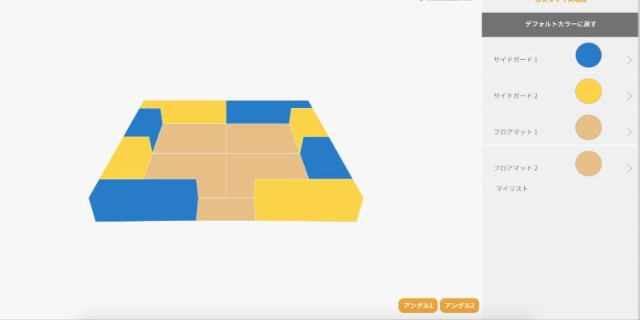
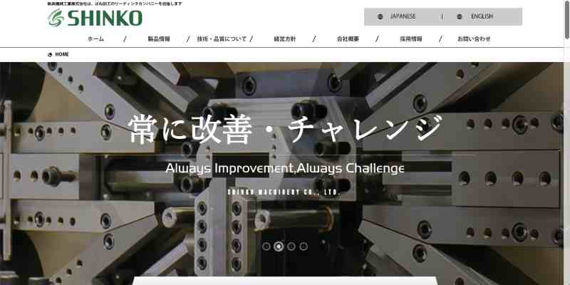
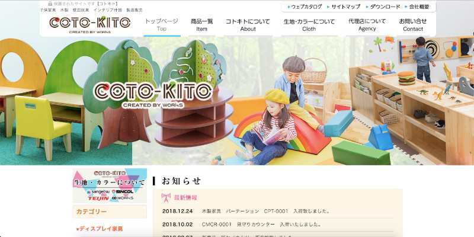
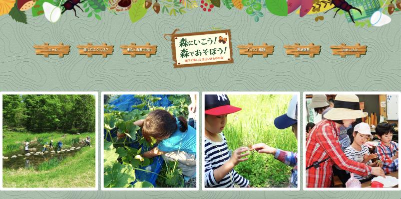
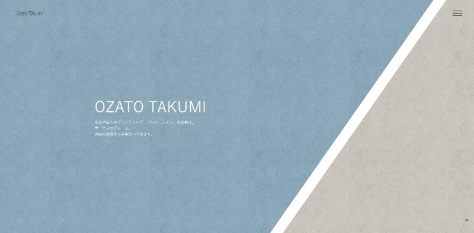
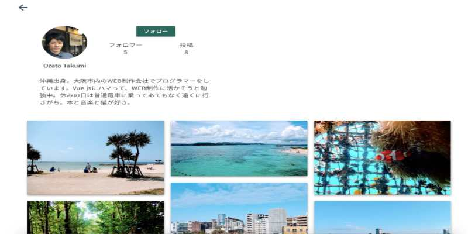

OZATO TAKUMI
企業や個人のブランディング、プロモーション、問題解決。
あるいはサービスのグロース。
Webの側面からお手伝い。
ABOUT
Ability
できること
Web開発者として、どんなことができるか書いています。組織に加わることで、どんな働きをするか、どういった面でプラスの要素をもたらすかをイメージする材料になればと思います。
Future
これからやりたいこと
これからどんなことに挑戦していきたいか、どんな価値を生み出したいかについて書いています。組織として目指す方向性と合致しているかという目線で見ていただければと思います。
WORKS
ECサイト
 担当工程：設計/コーディング/プログラミング
カーディーラーや携帯ショップなどの店舗に置かれている、子ども用の遊び場「キッズコーナー」のメーカー様と協力して、ECサイトを制作しました。
店舗の雰囲気に合わせた色選びが重要になるため、Web上で色を確認しながら選べる、「カラーシミュレーター機能」を設計、コーディング、プログラミングしました。
キッズコーナーをSVG画像で表現し、JavaScriptを使って各パーツのCSSを動的に変更するようにしています。
コーポレートサイト
 担当工程：プログラミング
ばねを製造する機械メーカー様のオフィシャルサイトを制作しました。
機械のマイナーチェンジが多いため、サイト上に掲載する情報を頻繁に変える可能性がある、ブログを更新し、会社として情報発信をしたい、という要望を踏まえて、WordpressをCMSとして導入し、クライアント様自身でコンテンツを更新できるように対応しました。また、海外へのアプローチも盛んに行っており、今後のグローバル展開を考慮し、多言語対応もしました。
コーポレートサイト
 担当工程：コーディング/プログラミング
国内生産、安全性、木の温もりにこだわった、木製の子ども用家具メーカー様のコーポレートサイトを制作しました。
精力的に新しい商品を開発、販売されているため、WordpressをCMSとして導入し、クライアント様地震でコンテンツを更新できるように対応しました。カテゴリー分類や関連商品の登録、商品紹介動画の登録など、多彩な対応ができるようにカスタマイズしました。
イベントサイト
 担当工程：コーディング
一般財団法人が主催するイベントのPRサイトを制作しました。
子ども向けのイベントのため、ポップで目を引くような構成を重視し、トップページにGif画像やちょっとした動きを取り入れて、楽しくなるようなサイト作りを意識しました。
個人技術ブログ
 担当工程：/コーディング/ライティング
主にプログラミングのおいて発生した問題やトラブルの解決方法、学習したことのアウトプットを目的とした技術ブログです。
SEOを意識して記事を書いており、2018年1月からスタートして今のところ月間のユニークユーザー数は2500ほどです。
Wordpressを使って構築しており、Herokuでホスティングしています。
SNS風アルバムアプリケーション
 担当工程：設計/デザイン/コーディング/プログラミング
写真を撮るのが好きなので、撮った写真をアップして見ることができる簡単なアプリケーションを作ってみました。Vue.jsの練習が主な目的です。
せっかくなので、ちょっとしたアニメーションをつけたり、SNS風に「いいね」「お気に入り」「フォロー」機能をつけてみました。実際にいいねやフォローのボタンを押しても何も起こらないので、安心して触ってみてください。